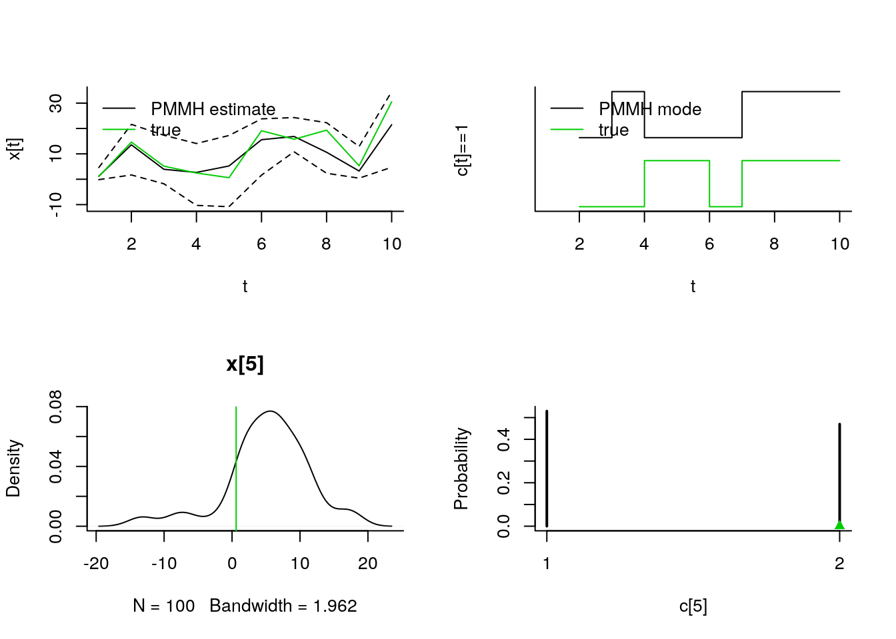

This is a quick demo of rbiips main functions.
Disclaimer: for speed of execution, we use very few particles and MCMC iterations in this vignette. As such, the results are not representative of the perforance of SMC and particle MCMC methods.
set.seed(0)
library(rbiips)Add custom function f
f_dim <- function(x_dim, t_dim) {
# Check dimensions of the input and return dimension of the output of function f
stopifnot(prod(x_dim) == 1, prod(t_dim) == 1)
x_dim
}
f_eval <- function(x, t) {
# Evaluate function f
0.5 * x + 25 * x/(1 + x^2) + 8 * cos(1.2 * t)
}
biips_add_function('f', 2, f_dim, f_eval)## * Added function fAdd custom sampling distribution dMN
dMN_dim <- function(mu_dim, Sig_dim) {
# Check dimensions of the input and return dimension of the output of
# distribution dMN
stopifnot(prod(mu_dim) == mu_dim[1], length(Sig_dim) == 2, mu_dim[1] == Sig_dim)
mu_dim
}
dMN_sample <- function(mu, Sig) {
# Draw a sample of distribution dMN
mu + t(chol(Sig)) %*% rnorm(length(mu))
}
biips_add_distribution('dMN', 2, dMN_dim, dMN_sample)## * Added distribution dMNmodelfile <- system.file('extdata', 'hmm_f.bug', package = 'rbiips')
stopifnot(nchar(modelfile) > 0)
cat(readLines(modelfile), sep = '\n')## var c_true[tmax], x_true[tmax], c[tmax], x[tmax], y[tmax]
##
## data
## {
## x_true[1] ~ dnorm(0, 1/5)
## y[1] ~ dnorm(x_true[1], exp(logtau_true))
## for (t in 2:tmax)
## {
## c_true[t] ~ dcat(p)
## x_true[t] ~ dnorm(f(x_true[t-1], t-1), ifelse(c_true[t]==1, 1/10, 1/100))
## y[t] ~ dnorm(x_true[t]/4, exp(logtau_true))
## }
## }
##
## model
## {
## logtau ~ dunif(-3, 3)
## x[1] ~ dnorm(0, 1/5)
## y[1] ~ dnorm(x[1], exp(logtau))
## for (t in 2:tmax)
## {
## c[t] ~ dcat(p)
## x[t] ~ dnorm(f(x[t-1], t-1), ifelse(c[t]==1, 1/10, 1/100))
## y[t] ~ dnorm(x[t]/4, exp(logtau))
## }
## }tmax <- 10
data_ <- list(tmax = tmax, p = c(.5, .5), logtau_true = log(1), logtau = log(1))
model <- biips_model(modelfile, data_, sample_data = TRUE)## * Parsing model in: /home/adrien/R/x86_64-pc-linux-gnu-library/3.4/rbiips/extdata/hmm_f.bug
## * Compiling data graph
## Declaring variables
## Resolving undeclared variables
## Allocating nodes
## Graph size: 94
## Sampling data
## Reading data back into data table
## * Compiling model graph
## Declaring variables
## Resolving undeclared variables
## Allocating nodes
## Graph size: 105data_ = model$data()n_part <- 100
out_smc <- biips_smc_samples(model, c('x', 'c[2:10]', 'x[5]', 'c[5]'),
n_part, type = 'fs',
rs_thres = 0.5, rs_type = 'stratified')## * Assigning node samplers
## * Running SMC forward sampler with 100 particles
## |--------------------------------------------------| 100%
## |**************************************************| 10 iterations in 0.04 sbiips_diagnosis(out_smc)## * Diagnosis of variable: c[2:10]
## Filtering: GOOD
## Smoothing: POOR
## The minimum effective sample size is too low: 27.97195
## Estimates may be poor for some variables.
## You should increase the number of particles
## .* Diagnosis of variable: c[5]
## Filtering: GOOD
## Smoothing: POOR
## The minimum effective sample size is too low: 27.97195
## Estimates may be poor for some variables.
## You should increase the number of particles
## .* Diagnosis of variable: x[1:10]
## Filtering: GOOD
## Smoothing: POOR
## The minimum effective sample size is too low: 27.97195
## Estimates may be poor for some variables.
## You should increase the number of particles
## .* Diagnosis of variable: x[5]
## Filtering: GOOD
## Smoothing: POOR
## The minimum effective sample size is too low: 27.97195
## Estimates may be poor for some variables.
## You should increase the number of particles
## .summ_smc <- biips_summary(out_smc, probs=c(0.025, 0.975))
par(mfrow = c(2, 2), bty='l')
matplot(do.call(cbind, summ_smc$x$f$quant),
type='n', xlab='t', ylab='x[t]')
lines(summ_smc$x$f$mean)
matlines(do.call(cbind, summ_smc$x$f$quant), col=1, lty=2)
lines(summ_smc$x$s$mean, col=2)
matlines(do.call(cbind, summ_smc$x$s$quant), col=2, lty=2)
lines(data_$x_true, col=3)
legend('topleft',
leg=c('SMC filtering estimate',
'SMC smoothing estimate', 'true'),
col=1:3, lty=1, bty='n')
matplot(c(1,tmax), c(0,4), type='n', xlab='t', ylab='c[t]==1', yaxt='n')
lines(2:tmax, 2+summ_smc[['c[2:10]']]$f$mode, type='S')
lines(2:tmax, .5+summ_smc[['c[2:10]']]$s$mode, type='S', col=2)
lines(-1+data_$c_true, type='S', col=3)
legend('topleft',
leg=c('SMC filtering mode',
'SMC smoothing mode', 'true'),
col=1:3, lty=1, bty='n')
plot(biips_density(out_smc[['x[5]']]))
abline(v=data_$x_true[5], col=3)
plot(biips_table(out_smc[['c[5]']]))
points(data_$c_true[5], 0, col=3, pch=17)n_part <- 50
obj_pimh <- biips_pimh_init(model, c('x', 'c[2:10]', 'x[5]', 'c[5]')) # Initialize## * Initializing PIMHout_pimh_burn <- biips_pimh_update(obj_pimh, 100, n_part) # Burn-in## * Updating PIMH with 50 particles
## |--------------------------------------------------| 100%
## |**************************************************| 100 iterations in 1.87 sout_pimh <- biips_pimh_samples(obj_pimh, 100, n_part) # Samples## * Generating PIMH samples with 50 particles
## |--------------------------------------------------| 100%
## |**************************************************| 100 iterations in 1.85 ssumm_pimh <- biips_summary(out_pimh, probs=c(0.025, 0.975))
par(mfrow = c(2, 1), bty='l')
plot(c(out_pimh_burn$log_marg_like, out_pimh$log_marg_like),
type = 'l', xlab = 'PIMH iteration', ylab = 'log p(y)')
plot(101:200, c(out_pimh[['x[5]']]),
type = 'l', xlab = 'PIMH iteration', ylab = 'x[5]')
abline(h=data_$x_true[5], col = 3)par(mfrow = c(2, 2), bty='l')
matplot(do.call(cbind, summ_pimh$x$quant),
type='n', xlab='t', ylab='x[t]')
lines(summ_pimh$x$mean)
matlines(do.call(cbind, summ_pimh$x$quant), col=1, lty=2)
lines(data_$x_true, col=3)
legend('topleft',
leg=c('PIMH estimate', 'true'),
col=c(1,3), lty=1, bty='n')
matplot(c(1,tmax), c(0,2.5), type='n', xlab='t', ylab='c[t]==1', yaxt='n')
lines(2:tmax, .5+summ_pimh[['c[2:10]']]$mode, type='S')
lines(-1+data_$c_true, type='S', col=3)
legend('topleft',
leg=c('PIMH mode', 'true'),
col=c(1,3), lty=1, bty='n')
plot(biips_density(out_pimh[['x[5]']]))
abline(v=data_$x_true[5], col=3)
plot(biips_table(out_pimh[['c[5]']]))
points(data_$c_true[5], 0, col=3, pch=17)n_part <- 50
logtau_val <- -10:10
out_sens <- biips_smc_sensitivity(model, list(logtau = logtau_val), n_part)## * Analyzing sensitivity with 50 particles
## |--------------------------------------------------| 100%
## |**************************************************| 21 iterations in 0.32 spar(mfrow = c(2,1), bty='l')
plot(logtau_val, out_sens$log_marg_like, type='l',
xlab = 'logtau', ylab = 'log p(y | logtau)')
abline(v=data_$logtau_true, col=3)
plot(logtau_val, out_sens$log_marg_like_pen, type='l',
xlab = 'logtau', ylab = 'log p(y, logtau)')
abline(v=data_$logtau_true, col=3)data_ <- list(tmax = 10, p = c(.5, .5), logtau_true = log(1))
model <- biips_model(modelfile, data_)## * Parsing model in: /home/adrien/R/x86_64-pc-linux-gnu-library/3.4/rbiips/extdata/hmm_f.bug
## * Compiling data graph
## Declaring variables
## Resolving undeclared variables
## Allocating nodes
## Graph size: 93
## Sampling data
## Reading data back into data table
## * Compiling model graph
## Declaring variables
## Resolving undeclared variables
## Allocating nodes
## Graph size: 105data_ <- model$data()
n_part <- 50
n_burn <- 100
n_iter <- 100
obj_pmmh <- biips_pmmh_init(model, 'logtau',
latent_names = c('x', 'c[2:10]', 'x[5]', 'c[5]'),
inits = list(logtau = -1)) # Initialize## * Initializing PMMHout_pmmh_burn <- biips_pmmh_update(obj_pmmh, n_burn, n_part) # Burn-in## * Adapting PMMH with 50 particles
## |--------------------------------------------------| 100%
## |++++++++++++++++++++++++++++++++++++++++++++++++++| 100 iterations in 1.88 sout_pmmh <- biips_pmmh_samples(obj_pmmh, n_iter, n_part, thin = 1) # Samples## * Generating 100 PMMH samples with 50 particles
## |--------------------------------------------------| 100%
## |**************************************************| 100 iterations in 1.67 ssumm_pmmh <- biips_summary(out_pmmh, probs=c(.025, 0.975))
par(mfrow = c(2, 2), bty='l')
plot(c(out_pmmh_burn$log_marg_like_pen, out_pimh$log_marg_like_pen),
type = 'l', xlab = 'PMMH iteration', ylab = 'log p(y, logtau)')
plot(n_burn+(1:n_iter), c(out_pmmh$logtau),
type = 'l', xlab = 'PMMH iteration', ylab = 'logtau')
abline(h=data_$logtau_true, col = 3)
plot(biips_density(out_pmmh$logtau))
abline(v=data_$logtau_true, col=3)
biips_hist(out_pmmh$logtau)
abline(v=data_$logtau_true, col=3)matplot(do.call(cbind, summ_pmmh$x$quant),
type='n', xlab='t', ylab='x[t]')
lines(summ_pmmh$x$mean)
matlines(do.call(cbind, summ_pmmh$x$quant), lty=2, col=1)
lines(data_$x_true, col=3)
legend('topleft',
leg=c('PMMH estimate', 'true'),
col=c(1,3), lty=1, bty='n')
matplot(c(1,tmax), c(0,2.5), type='n', xlab='t', ylab='c[t]==1', yaxt='n')
lines(2:tmax, .5+summ_pmmh[['c[2:10]']]$mode, type='S')
lines(-1+data_$c_true, type='S', col=3)
legend('topleft',
leg=c('PMMH mode', 'true'),
col=c(1,3), lty=1, bty='n')
plot(biips_density(out_pmmh[['x[5]']]))
abline(v=data_$x_true[5], col=3)
plot(biips_table(out_pmmh[['c[5]']]))
points(data_$c_true[5], 0, col=3, pch=17)